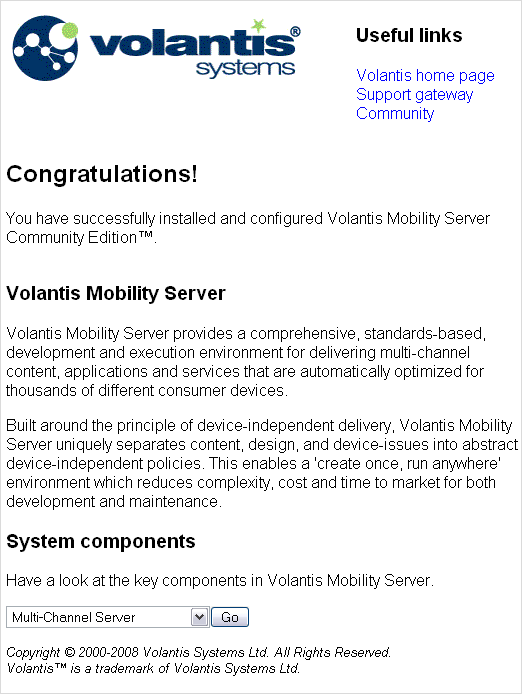

Installation
Required software 
There are several software components that you will need. Volantis Mobility Server requires a
web application server, JDK 1.5 or 1.6, and the Eclipse IDE is needed for policy development.
See MCS Supported platforms for further information. You will also find an
XML editor useful for creating XDIME code.
If you plan to download the source code, you will also need Maven to build the Community
edition.
- Download and install a copy of the Apache Tomcat web application server, if you
don't already have it. The latest, stable release should be fine. The instructions in this
guide are based on Tomcat Version 5, which you can find at
http://tomcat.apache.org/
- Download and install the Eclipse IDE, if you don't already have it. Version 3.2.2 is a
good choice. Later versions are not compatible with Volantis Mobility Server. You can find
downloads of several versions of Eclipse at
http://archive.eclipse.org/eclipse/downloads/index.php
Building Volantis Mobility Server
To build the Community edition you will need to download five distinct
.tar or .zip files (both are available). Because of
dependencies, you should always build them in the following sequence in cases where you wish
to build Volantis Mobility Server in its entirety.
This is because the build process will initially retrieve the required
.jar files from a Volantis server. Once any component is built the JARs
will be located in your local Maven repository. If you make changes to the source you may not
want the original JARS to be reused in all cases.
- Synergetics - Synergetics-5.1-ce-src.tgz/zip
- Device Repository - DeviceRepository-5.1-ce-src.tgz/zip
- Media Access Proxy - MAP-5.1-ce-src.tgz/zip
- Multi-Channel Server - MCS-5.1-ce-src.tgz/zip
- Message Preparation Server - MPS-5.1-ce-src.tgz/zip
Caution: Some JARs for application server installations and MPS cannot be
distributed under the Community edition license. You will need to obtain the JARs from the
appropriate vendor. To add these to the build, you add system properties with an option to the
install command, for example mvn install -Dmcs-dynamo=true mvn install
-Dmcs-weblogic=true mvn install -Dmcs-nokia=true
- If you have not done so already, download the Community edition sources from the following
URL and unzip them to a directory
http://www.volantis.com/sources-download
- Download Maven and install it following the instructions on the Maven site. Version 2.0.8,
which is in use at Volantis, can be obtained at
http://maven.apache.org/download.html
- Ensure that MAVEN_HOME is set to the Maven download location, and JAVA_HOME is set to your
JDK installation directory
- On Unix
export MAVEN_OPTS="-Xmx256M -XX:MaxPermSize=96M"
- Or on Windows
set MAVEN_OPTS=Xmx256M -XX:MaxPermSize=96M
- Change directory to the MCS source code root directory, and unset your CLASSPATH variable
if it's set
- Ensure that version 2.0.8 of Maven is used. On Unix add $MAVEN HOME/bin to
the beginning of your PATH variable. On Windows add %MAVEN HOME%\bin to the PATH
variable
- If you are not on Linux, build the source with the command
mvn -DskipTests
install - To generate the Javadoc (MCS only), change directory to javadoc and
issue the command
mvn javadoc:javadoc
- Optionally build the installers (MCS, MAP and MPS) by changing directory to
installer/api (MCS and MPS) or just installer (for
MAP) and issuing the command
mvn izpack:izpack
Running the installer
Your project information and the device database can be deployed either as XML files or in a
JDBC repository. We recommend that you configure an XML repository initially, and always use
it for policy development. When you move to a production system, you can make any necessary
configuration changes for a suitable environment, and import the policies and device data to a
JDBC based service. Refer to the administration topics Setting up the MCS runtime, Configuring a JNDI datasource and Importing and exporting repositories for more information.
To follow this guide you need only install MCS. Later, if you want to use media transcoding
features, you will also need to install Media Access Proxy (MAP). See Installing MAP in Eclipse Help or the MAP Installation and Administration Guide for
details. When you install MCS, you can enter the MAP host and port settings if you wish.
- Download the binary installer from the community edition web site
(http://www.volantis.com/downloads), or use the one you have
built. A wizard guides you through the installation process.
- Start the installer with the command
java -jar mcs_installer-5.1jar
- Accept the license agreement
- Accept the default pack selection
- Select 'XML' as a value in the dropdown for Initial repository
vendor
- On the application server page, select Apache Tomcat from the drop down list. Leave the
Host as localhost, but change the port number if you run Tomcat on a
different port.
- Accept the default Media Access Proxy URL
- Enter the file location to install MCS or accept the default
- The installer displays a summary of some installation choices. Use the
Previous button to go back and change any options. When you are satisfied
with all your choices, click Next to start the installation.
- Optionally save your installation settings by clicking Generate an automatic
installation script, and naming the file. To repeat the installation run the
following command.
java -jar mcs_installer-5.1.jar [configuration_file]
- Click Done to complete the installation
Copy the Eclipse plugins
Volantis Mobility Server includes a number of Eclipse plugins for tools and documentation.
These need to be copied from the installation to the Eclipse environment as follows.
Tip: Once you have installed the Eclipse plugins, you will also be able to access
the documentation in the Eclipse Help system.
- Copy the contents of the /MCS/eclipse/plugins directory, including
any sub-directories, to the Eclipse plugins directory location
- Also copy the contents of /MCS/eclipse/features/ to the
features directory
- An alternative way to install the plugins to Eclipse is to use Eclipse manager:
- Open Eclipse
- Go to Help | Software Updates | Find and
Install to open the wizard window
- Select Search for new features to install
- Press the New Local Site button and select the
/MCS/eclipse directory
- Press the Finish button
- Accept the terms in the license agreement
- Press Next, and then Finish to complete
Setting up Tomcat
Below the webapps directory of your installation, you'll find a
directory called mcs. When you have completed this task, you can check
that everything has installed correctly by displaying the welcome page.
Note: The welcome directory contains some additional welcome page materials which
support more advance XDIME methods. You can examine these at a later time.
- Copy this directory and its contents to the webapps directory in your
Tomcat installation.
- Start Tomcat and point your PC browser at
http://localhost:8080/mcs/projects/welcome/simple_welcome.xdime
You
should see the following page. 